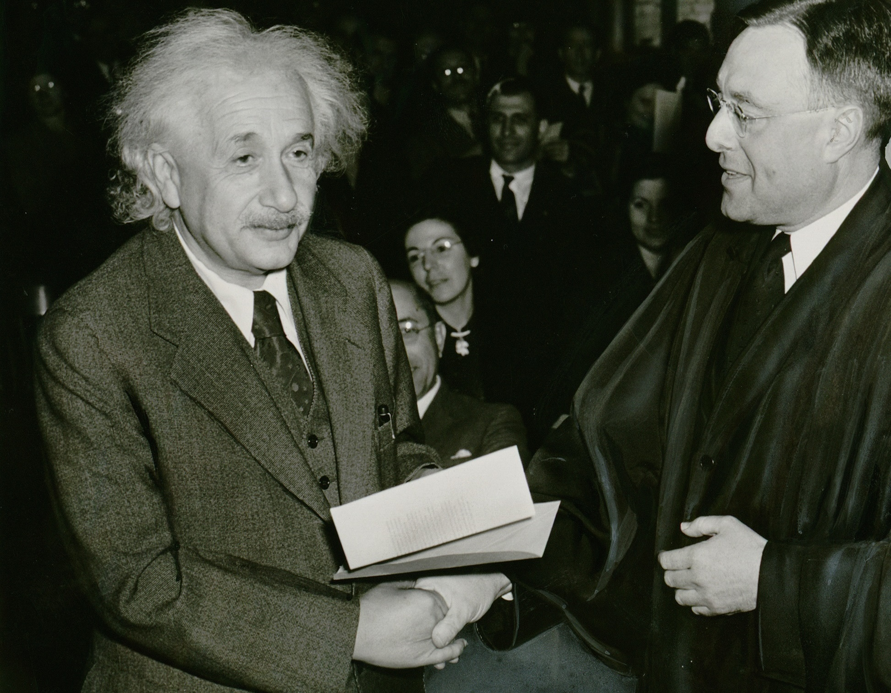

Time isn't as straightforward as it seems. Before Einstein, time was concrete. You asked someone what time it was, and they told you, thinking that it was true for everyone, everything, and everywhere. If a clock said 4:37 pm, that was the time on Earth, on the Moon, flying by the Sun, near a black hole, and on Proxima Centauri b. However, we now know that this couldn't be further from the truth. Einstein realized that time is different for everyone, changing it from just the hands on your watch to a scientific concept.

I can't tell you what time exactly is (because no one really knows), but I can tell you how it changes. According to General Relativity, gravity and velocity are what affect physical time itself. The closer you get to a celestial body and/or the faster you move, the slower time ticks for you
Well, now you might be wondering: what do photons (light) have anything to do with this? I'm glad you asked! Light travels fast… really fast. Nothing in the universe travels faster than a photon, and if we apply our newly learned principles of general relativity, we can deduce that a photon must experience time more slowly than anything else. But just how slowly do they experience time? Is it twice as long? Three times? Five? Ten? Fifteen? Nope, they experience time infinitely slower. What does that mean? Well, as you approach the speed of light, your perception of time diminishes, and once you reach it, time is frozen. There is no past, present, or future. There is everything all at once. Let that soak in…
This means that a photon that was created during the Big Bang, traveled 13.8 billion years, and hit your retina experiences the birth of the universe and the collision with your eye… at… the… same… time. This means that their life is both older than everything in the cosmos and instantaneous.
With this slightly unsettling fact in mind, stay curious and photonic.